Blogging is a popular way to share information with Internet users by posting short articles in an ad hoc manner. In an emergency situation, blogging could provide a way to disseminate critical information if it weren't for the fact that Internet access is often unavailable is such situations.
The use of radio for emergency communications is well understood and, of course, is always available. JS8 is a radio data mode that works in a wide range of conditions. With all the above in mind, let's move onto the concept of microblogging.
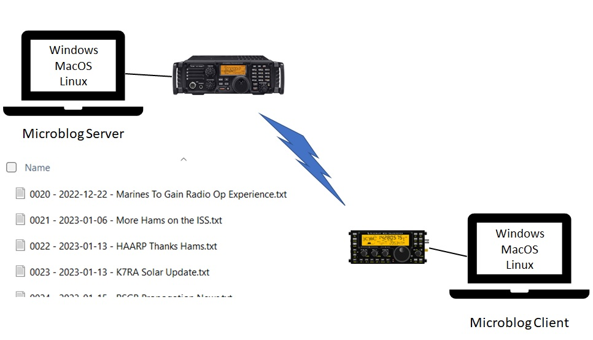
A microblog is a blog that contains small concise posts that are delivered to amateur radio operators via JS8. Although it may take 3 minutes for JS8 to deliver a microblog post, it doesn't rely on the Internet and is reliable in adverse conditions.
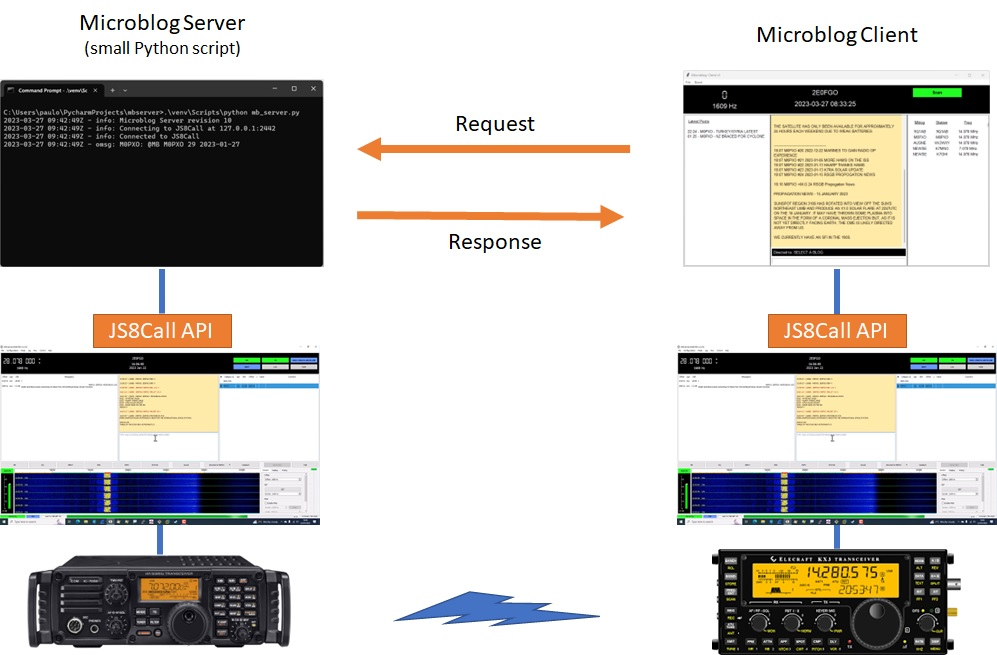
A microblog server is hosted on an amateur radio operator's computer and uses the JS8Call application to provide the JS8 transport mechanism. A microblog client sends requests to the mbserver which responds with the requested information.
A microblog post is stored as a simple text file in the server computer. The content of the text file will look something like this:
Three of the four new astronauts on February's planned launch of the SpaceX Crew-6 mission to the
International Space Station (ISS) are amateur radio operators.
Pilot Warren "Woody" Hoburg, KB3HTZ; Commander Stephen Bowen, KI5BKB, and Mission Specialist
Sultan Al Neyadi, KI5VTV, will join Mission Specialist Andrey Fedyaev on board the SpaceX Dragon
spacecraft, Endeavour.
Although we can create a post file with any content we wish, there are a few points to note:
The format of the file name is important. The file name must contain:
Here's a directory listing for the sample posts that are included in the mbserver installation package:
04/02/2023 13:05 378 0021 - 2023-01-06 - More Hams on the ISS.txt
04/02/2023 13:06 254 0022 - 2023-01-13 - HAARP Thanks Hams.txt
09/03/2023 13:34 348 0023 - 2023-01-13 - K7RA Solar Update.txt
04/02/2023 13:06 342 0024 - 2023-01-15 - RSGB Propogation News.txt
04/02/2023 13:06 369 0025 - 2023-01-20 - FalconSAT-3 Nears Reentry.txt
04/02/2023 13:06 387 0026 - 2023-01-20 - 2026 World Radiosport Team Championship News.txt
04/02/2023 13:07 249 0027 - 2023-01-22 - RSGB Propogation News.txt
04/02/2023 13:07 195 0028 - 2023-01-26 - Yaesu Radios Donated to ARRL.txt
09/03/2023 13:34 285 0029 - 2023-01-27 - RSGB Propogation News.txt
10 File(s) 3,115 bytes
2 Dir(s) 208,286,642,176 bytes free
As you can see, the Post ID is the first element of the file name (e.g. 0026). The post ID can have any number of leading zeros (or none at all). The advantage of using a consistent number of Post ID digits is that when we list the directory, we can order it by Post ID.
Next comes the Date of the post. This should be the date associated with the information, rather than the date the post was created. Notice how I created post 0028 on February 4th (my computer locale displays dates in dd/mm/yyy format) but the Post Date shows as 2023-01-26. That's because the source ARRL article was dated January 26th. Similarly, I might later edit post 0028 to correct a typo and, although the file system Modified Date will change, the Post Date will remain 2023-01-26.
Finally we have the title of the post.
The challenge for an operator running a server is to keep the post title and content as concise as possible to minimise transmission time.
The MbClient app has the following capabilities:
* @MB Announcement - Each microblog server periodically sends to the JS8 group @MB an announcement message containing the blog name, latest Post ID and latest Post Date
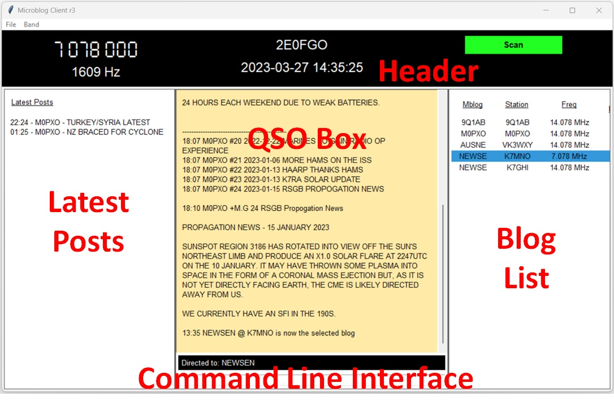
The user interface for the MbClient has five areas:
Let's look at three typical ways you would use this interface.
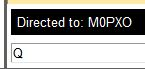
To request information from a microblog blog, we must first select the blog from the Blog List, and we can only do that if our station has seen an announcement for that blog. To avoid having to wait for the announcement, we can request all servers announce using the (Q)uery command.
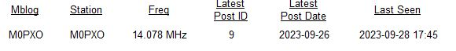
Simply enter the letter Q into the Command Line Interface box. The Blog List will update with the blogs that receive the query. Remember, this may take a minute or two to complete. It's not necessary to select a blog prior to using the Q command. If you have selected a blog, it's ignored when sending the Query command, since the command is sent to the @MB group.
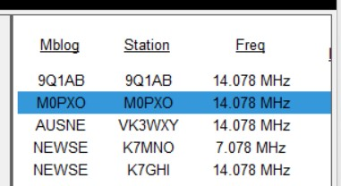
We start by clicking on a blog in the Blog List. Above we have chosen the M0PXO blog.
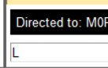
Next we enter the L command in the Command Line Interface (CLI) box and hit Enter.
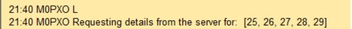
The command is echoed in the QSO Box, and we see a progress message that shows that the app has asked the server for a list of the most recent posts.
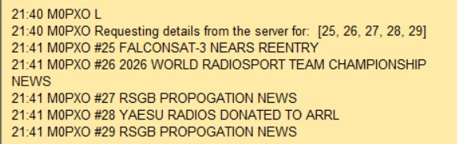
The listing is retrieved from the microblog server and displayed in the QSO Box.
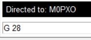
With the M0PXO blog still selected, we enter the G command in the CLI box and hit Enter.
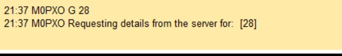
The command is echoed in the QSO Box, and we see a progress message that shows that the app has asked the server for the post content.
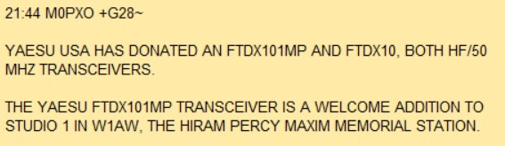
The post content is retrieved from the server and displayed in the QSO Box.
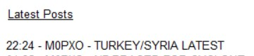
Click on a post in the Latest Posts area.
A GET (G) command appears in the QSO Box, and the correct blog is selected. This may also cause the rig frequency in the Header area to change if the Latest Post was heard on another frequency.
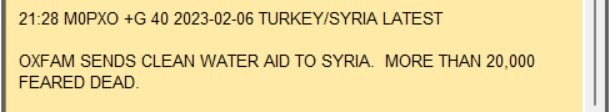
The post content is retrieved from the server and displayed in the QSO Box.
As an operator, we can change several parameters through the File -> Settings menu.
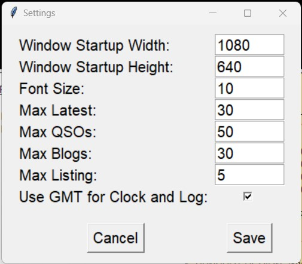
Window Startup Width: The width in pixels of the client window on startup. Default - 1080
Window Startup Height: The height in pixels of the client window on startup. Default - 640
Font Size: The base font size for the text displayed in the user interface. Some text will be in a larger font than specified here (for example, header text) but this will scale with the Font Size setting. Default - 10
Max Latest: The maximum number of posts that will be listed in the Latest Posts area. These are listed in reverse datetime order and so older posts will eventually roll off the bottom of the list. Even so, the older posts will remain in the database and so can continue to be used for cache retrieval. Default - 30
Max QSOs: The maximum number of posts that will be listed in the QSO Box. These are listed in datetime order and so older posts will eventually roll off the top of the list. Even so, the older posts will remain in the database and so can continue to be used for cache retrieval. Default - 50
Max Blogs: The maximum number of blogs that will be listed in the Blog List area. These are listed in the order in which they were last seen; the latest seen blogs being at the top of the list. Default - 30
Max Listing: The maximum number Listing or Extended Listing items that will be retrieved by an L or E command. Default - 5
Use GMT for Clock and Log: Check this option if you want the clock in the user interface to show GMT (UTC) time. Uncheck this option if you want the clock to show your local time. The log messages will also obey this setting. Default - Checked
A change the settings will only take effect after restarting the MbClient.
The L command without any qualifiers will get you a list of the latest posts on a blog. You'll notice that the client sends a list of Post IDs to the server to get the list.
You may wonder, how is it that the client knows that this is the list of the latest posts? The client uses the Latest Post ID value in the Blog List to determine the list of the latest posts.
There is an issue here. Maybe we missed the last @MB Announcement for the blog and so the Latest Post ID value is out of date. We may suspect there are later posts, and we don't want to wait for the next announcement. We can force a retrieval of later posts by simply sending a command specifying a later Post ID; e.g. L 30. If there is no post 30 the server will just return NO POST FOUND.
You may wonder why the client functions in this way; why not just send an L command (with no Post IDs) to the server to get a full list of the latest posts?
Remember our objective to spend the least amount of time sending requests and getting responses. The command above shows us requesting listings for posts 25, 26, 27, 28 and 29. Say we already had listings for posts 25 through 27 in the cache. It would be faster to pull those details from the cache and just send a request to the server for posts 28 and 29.